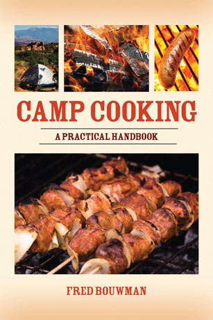

The following is an excerpt from Camp Cooking: A Practical Handbook by Fred Bouwman (Skyhorse Publishing, 2009). The excerpt is from Chapter 2: Shore Lunch.
One way that some fur trappers and other rural people maintain their household cash flow during the summer months is by trapping turtles and selling the meat to fish wholesalers and restaurants. While the yards-long, hoop-and-net turtle traps used by the pros are too much work for the recreational natural eater, taking turtles by unattended hook and line, where legal, is a productive method for adding another gourmet treat to the camp menu.
With sturdy hooks, a serious wire leader, and just about anything made of meat for bait, you’re in business. Study the regulations in your state regarding endangered species, and be sure to follow them. For eating purposes, all turtles taste about the same. The snapping turtle is the trophy, and with specimens ranging up to a foot long (measured across the shell) it’s usually the turtle that gets involved in dinner.
Snapping turtles have that name for a reason. Exercise care when handling them. They are very aggressive and can move much more quickly than you would expect a turtle to move, coming almost off the ground when they strike.
Start preparing your turtle dinner by encouraging him to bite a stick. Then while holding the stick away from the body to stretch the neck, have a companion with a good eye and stout arm lop off the head with a hatchet. Hang the turtle by the tail to bleed it.
There are two ways of removing the edible meat from the turtle. The first is to boil the entire animal, shell and all, and as it begins to cook, remove it from the water, slip the skin from the meat, and separate the top and bottom halves of the shell. This procedure is time-consuming and can be quite a hassle in camp.
A quicker way is to lay the turtle on its back, cut away the lower shell, then remove the meat from the tail, legs and neck, and extract the tenderloin that is located by the backbone. You may have to remove the backbone with a pry bar of some sort to get at them.
When you think of turtles, turtle soup comes to mind. If you want to save some time dressing the turtle, just get the meat out of the shell, bones and all. After the meat has boiled for a while, it is easy to separate the bones and gristle and break the meat up into smaller pieces. Turtle can also be breaded and pan-fried just like fish fillets, but it needs a little precooking first.
CAMP TURTLE SOUP
Ingredients:
Turtle meat from one turtle
1 large onion
Diced carrots, celery, and potatoes (enough to fill pot)
Beef or chicken bouillon cubes
Black pepper
Instructions:
Boil the turtle meat in the water with some of the beef or chicken bouillon until the meat can be removed from the bones. Do that, then add vegetables and cook until just done. Season with the pepper.
FRIED TURTLE
Ingredients:
1 turtle, cleaned and cut into large pieces
Flour seasoned with salt and pepper
Oil for frying
2 beaten eggs
2 pints milk
Dry bread crumbs or cracker meal
Instructions:
Parboil the turtle meat, separate it from the bones, and cut the meat into bite-sized pieces or larger. Coat it with the seasoned flour, dip it into the eggs, and coat it with the bread crumbs or cracker meal. Fry it in an inch or more of hot cooking oil. Break the meat up into smaller pieces.
|
 SKYHORSE PUBLISHING Breathe new life into your campfire dining experience with “Camp Cooking: A Practical Handbook,” which includes hundreds of healthy and delicious campfire recipes. |
ISTOCKPHOTO/LJUPCO SMOKOVSKI Bait turtles with any aromatic meat. |
|